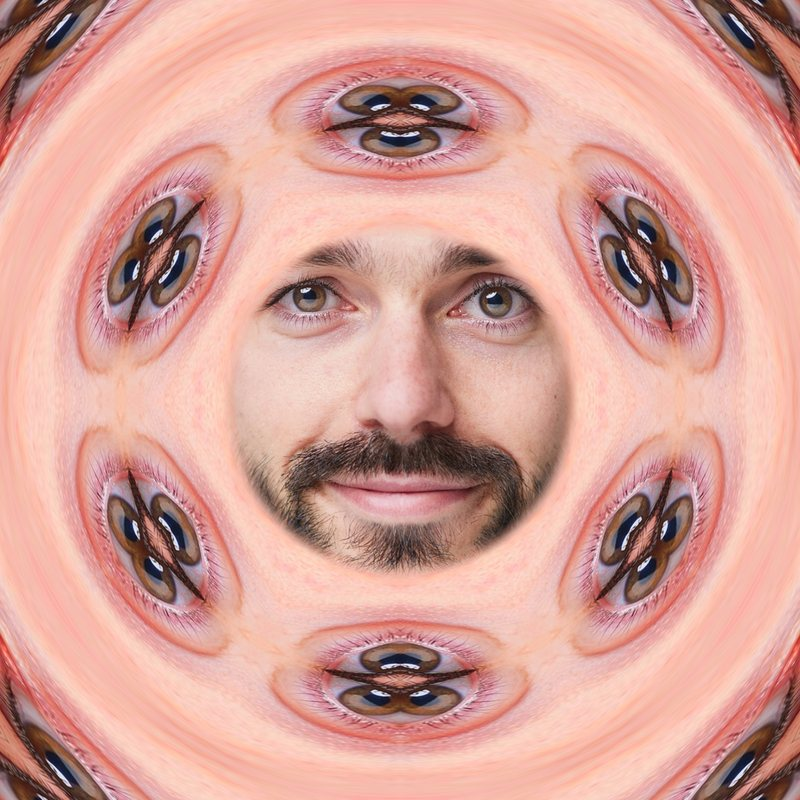
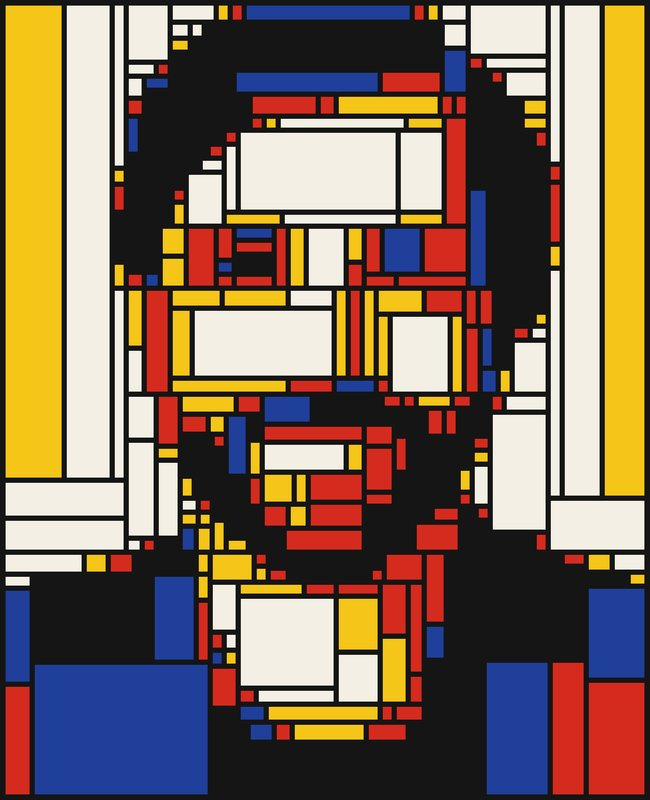
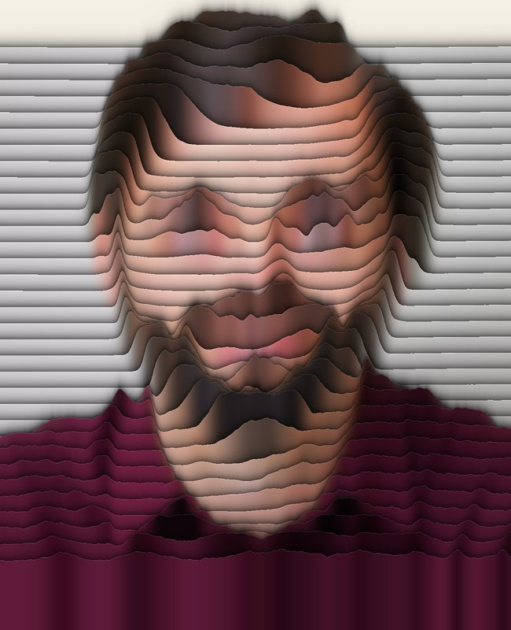
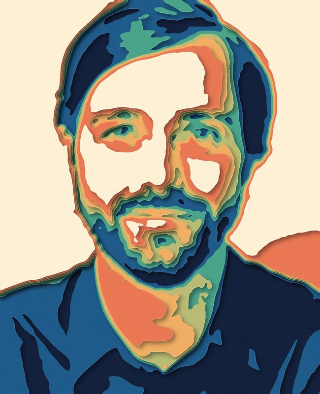
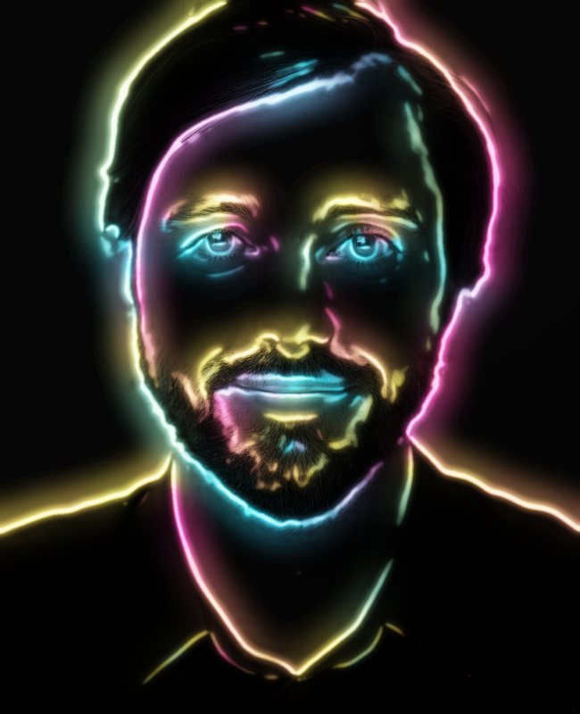
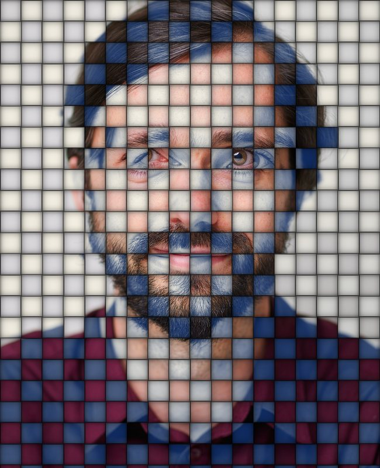

Geheim
Proeftuin
Hier groeien de experimenten: abstracte bewerkingen van je portret, nog niet af en misschien nooit af. Upload één foto, kies een bewerking en klik. Sommige zijn elke keer anders: klik nog eens voor een nieuwe versie. Je foto wordt niet bewaard.
Pixel Melt · Kaleido Face · Mondrian Split · Ridge Lines · Stained Glass · Flow Strokes · Topo Face · Neon Edge · Woven Portrait
Kies Je Foto
Eén keer uploaden is genoeg: dezelfde foto werkt voor alle bewerkingen hieronder.
Pixel Melt
Je foto smelt, als was die te warm is geworden. Alles zakt een beetje uit, en op sommige plekken druipt je gezicht in lange slierten naar beneden. Elke klik smelt het ergens anders.
Kaleido Face
In het midden je gezicht zoals het is; daaromheen valt het uiteen in een caleidoscoop van je eigen ogen, haar en mond. Elke klik een andere mandala.

Mondrian Split
Je foto opgedeeld in rechthoeken met dikke zwarte lijnen, in de kleuren van Mondriaan. De kleur volgt licht en donker (zwart, blauw, rood, geel, wit), dus met genoeg vlakken kijkt je gezicht terug.

Ridge Lines
Je gezicht als berglandschap van gekleurd karton. Elke laag komt omhoog waar je foto donker is, heeft de kleur van je foto op die hoogte en werpt een schaduw op de laag erachter.

Stained Glass
Glas-in-lood van je foto: honderden scherven met loodlijnen ertussen. Kleine scherven waar veel gebeurt (ogen, mond), grote in de achtergrond. Elke klik een ander patroon.

Flow Strokes
Je foto opnieuw geschilderd met duizenden penseelstreken die de vormen van je gezicht volgen, een beetje zoals Van Gogh. Eerst brede streken, dan fijne voor de details.

Topo Face
Je gezicht als maquette van gestapeld papier. Licht is hoog, donker is laag: elke hoogtelijn is de rand van een nieuw vel in een eigen kleur, met een schaduw op het vel eronder.

Neon Edge
Je portret in een donkere kamer, alleen verlicht door zijn eigen omtrek. De grote lijnen van je gezicht worden neonbuizen in roze, blauw en geel, en hun licht valt op je gezicht.

Woven Portrait
Twee afdrukken van je foto, in stroken gesneden en door elkaar gevlochten als een mandje: staand in kleur, liggend in blauwdruk. Met de hand gesneden, dus elke strook ligt net iets scheef.
